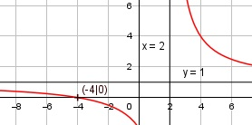

Aufgabe 110 x + 4 f(x) = ------- x - 2 Quotientenregel erste Ableitung: u = x + 4, u' = 1 v = x - 2, v' = 1 1 * (x - 2) - 1 * (x + 4) -6 f'(x) = -------------------------- = --------- (x - 2)2 (x - 2)2 Quotientenregel zweite Ableitung: u = -6, u' = 0 v = (x - 2)2 Kettenregel: v' = 2 * (x - 2) 0 * (x - 2)2 - 2 * (x - 2) * (-6) f''(x) = ----------------------------------- (x - 2)4 12 f''(x) = ---------- (x - 2)3 Zur Beurteilung, ob f'''(x) ≠ 0 : (Begründung siehe Aufgabe 105) u = 12, u' = 0 u' 0 f'''(x) = --- = ---------- = 0 für alle x ≠ 2 v (x - 2)3 Polstellen, Nenner = 0: (x - 2)2 = 0 |ⱱ x - 2 = 0 |+2 x = 2 Nenner = 0 und Zähler = 2 + 4 = 6 ≠ 0 --> senkrechte Asymptote Definitionsbereich: -∞ < x < ∞, x ≠ 2 Waagerechte Asymptote: 6 f(x) = (x + 4) : (x - 2) = 1 + ------ - (x - 2) x - 2 ---------- 6 6 1 + ------- geht gegen 1 für x --> ± ∞ x - 2 Wertebereich: -∞ < f(x) < ∞, f(x) ≠ 1 Symmetrie zur y-Achse bzw. zum Punkt (0|0): -x + 4 -(x - 4) x - 4 f(-x) = -------- = ---------- = ------- ≠ f(x) -x - 2 -(x + 2) x + 2 --> keine Achsensymmetrie -(x - 4) -x + 4 -f(-x) = -------- = -------- ≠ f(x) x + 2 x + 2 --> keine Punktsymmetrie Nullstellen: f(x) = 0 x + 4 ------- = 0 |*(x - 2) x - 2 x + 4 = 0 |-4 x = -4 Schnittpunkt mit der y-Achse: x = 0 0 + 4 f(0) = ------- = -2 0 - 2 Sy(0|-2) Extrempunkte: f'(x) = 0 -6 -------- = 0 |*(x - 2)2 (x - 2)2 -6 = 0 Widerspruch --> keine Extrempunkte Wendepunkte: f''(x) = 0 12 ---------- = 0 |*(x - 2)3 (x - 2)3 12 = 0 Widerspruch --> keine Wendepunkte Graph:
